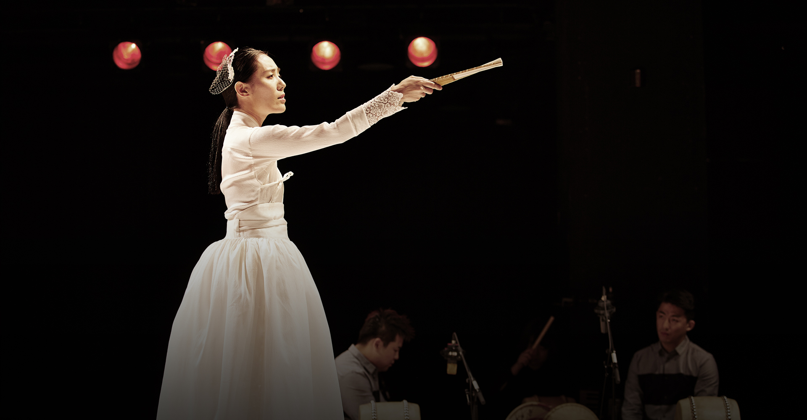
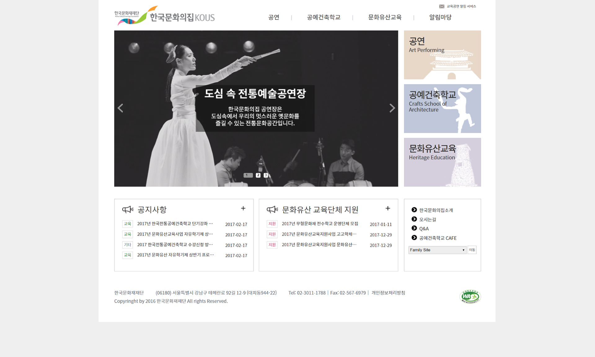
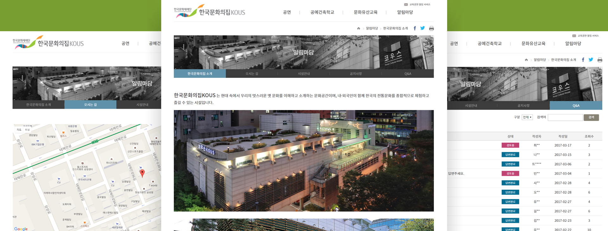

한국문화의집

OVERVIEW
기존에 있던 한국문화의집사이트를 재코딩하였다.
jquery로 박스슬라이드, 패밀리사이트, Gnb, Map기능을 적용하였다.
기존과 다른 메인 슬라이드 이미지를 디자인하여 적용하고, 링크박스 디자인을 변경하였다.
한국문화의집 새로운 이미지
jquery를 이용하여 기존에 있었던 기존 slider의 강한 컬러를 버리고 그레이톤으로 변경함으로써 전체적인 이미지가 깔끔하고 정돈되어 보이도록 하였다.
포토샵을 활용하여, 기존에 있었던 디자인과 다른 링크박스 디자인으로 미적 아름다움을 한층 더하였다.

